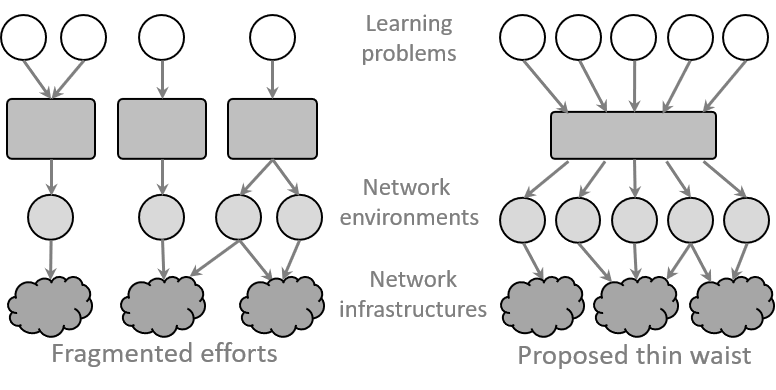

netUnicorn#
netUnicorn is a data-collection platform that simplifies expressing and realizing diverse data-collection intents over disparate network virtual (e.g., Mininet) and physical infrastructures (e.g., PINOT, SaltStack, Amazon AWS, MS Azure Container Instances, etc.).
see connectors for more details
Motivation#
The remarkable success of the use of machine learning-based solutions for networking problems has been impeded by the developed ML models’ inability to maintain efficacy when used in different network environments exhibiting different network behaviors. This issue is commonly referred to as the generalizability problem of ML models.
To address the generalizability issue, we need to simplify iterative collection of labelled, high-quality and realistic network data for a wide range of learning problems from diverse network environments. netUnicorn aims to address this problem ensuring that a researcher (or practitioner) can iteratively collect the desired network data, gradually eliminating the data-related problems to address the model generalizability issues.
Existing Approaches#
Very few previous efforts have focused on simplifying endogenous collection of networking data. Given this lack of focus, we only have solution that are typically fragmented in the sense that each effort is custom-designed for a specific learning problem or specific network environment. These fragmented solutions are not suited to solve the model generalizability issues.

Key Idea#
To simplify data collection for learning problems in network, we take inspiration from the classic hourglass model, where the different learning problems comprise the top layer, the different network environments constitute the bottom layer, and netUnicorn serves as the thin waist that connects the two layers. We realize this abstraction by developing a new programming abstraction that essentially disaggregates data-collection intents or policies (i.e., answering what data to collect and from where) from mechanisms (i.e., answering how to collect the desired data on a given platform)—simplifying collecting data from disparate network infrastructures.
Further, netUnicorn’s programming abstraction disaggregates the high-level intents into self-contained and reusable tasks—simplifying collecting data for different learning problems.
netUnicorn takes responsibility for compiling these high-level intents into target-specific instructions, deploying them to appropriate data-collection nodes, and executing them while handling various runtime events such as link or node failures. By doing so, netUnicorn streamlines the data collection process and ensures efficient execution in dynamic network environments.
Quick start#
Prerequisites#
To use the platform, administrators of the infrastructure should deploy it and provide you the next credentials:
endpoint: API url of the platform deployment
username: your username
password: your password
P.S. If you want to deploy the platform yourself, please, look at the deployment section.
Installation#
To use the platform, install the next package:
pip install netunicorn # installs client and library
Start of work#
Please, look at the examples of experiments to learn about different concepts and workflows.
Support#
You can join netUnicorn Slack workspace for support and discussions.
Source code#
All the code is open-source and available on GitHub.